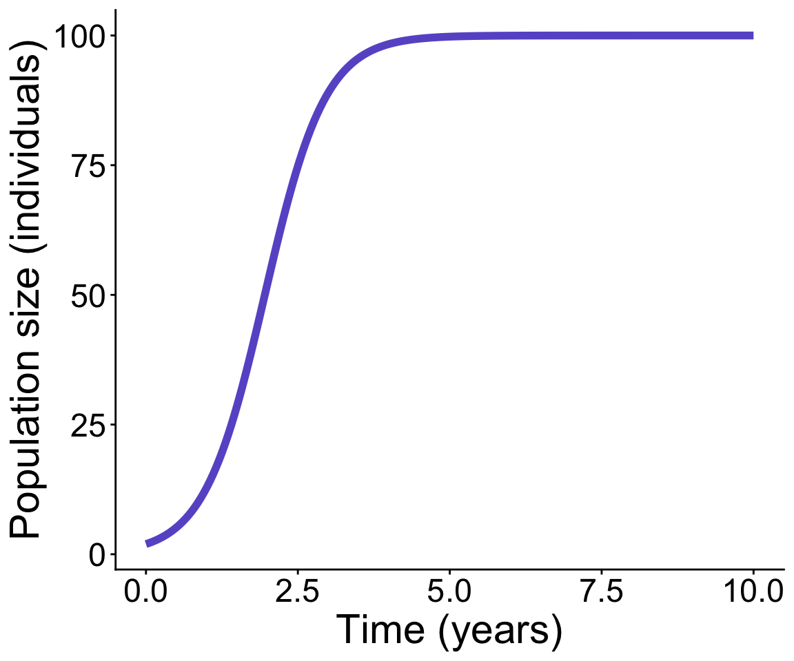
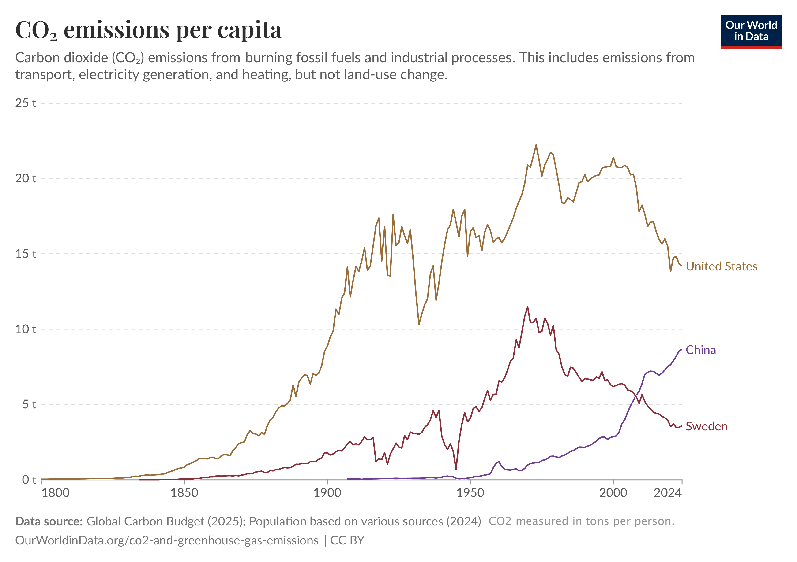
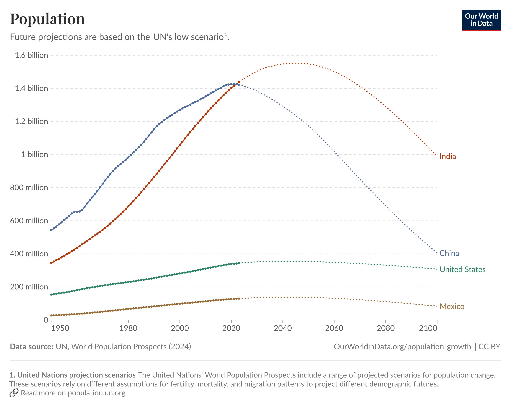
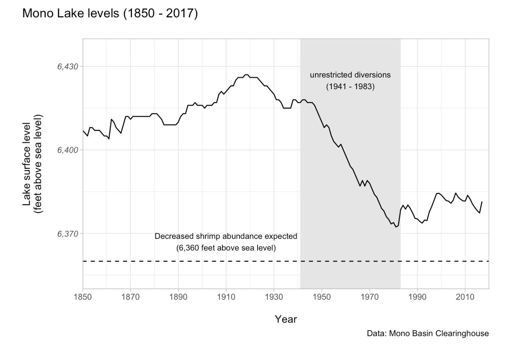

Day 2: Bren Math Workshop
Carmen Galaz García, Ph.D.
Bren School of Environmental Science & Management
UNITS. UNITS. UNITS.
Think about these statements, which all contain the same value of 4:
There are four in the refrigerator.
There are four burritos in the refrigerator.
There are four roaches in the refrigerator.
There are four million dollars in the refrigerator.
UNITS. UNITS. UNITS.
Think about this sign at New Cuyama. Anything odd here?
Units are critical in environmental science
We cannot responsibly work with data without knowing the units of each variable we’re working with.
That means we need to always familiarize ourselves with variables, carefully check units and any unit conversions, and understand how units combine into the units of a dependent variable.
Metric prefixes
Metric units are built from a base unit (like meters, grams, or liters) plus a prefix that scales it by a power of 10.
The factor indicates how many times to multiply the base unit by 10.
Example: 1 km = \(10^3\) m = 1000 m, and 1 cm = \(10^{-2}\) m = 0.01 m.
Metric prefixes
Metric units are built from a base unit (like meters, grams, or liters) plus a prefix that scales it by a power of 10.
The factor indicates how many times to multiply the base unit by 10.
Example: 1 km = \(10^3\) m = 1000 m, and 1 cm = \(10^{-2}\) m = 0.01 m.
Metric prefixes
Example. Convert 750 mL into L.
✏️ Let’s solve this together.
Metric prefixes
Example. Convert 750 mL into L.
Starting at milli and ending at base, we move 3 rows up the table:
milli → centi → deci → base
So we divide by \(10^3\):
\[\begin{align*}
750 \text{ mL} &= \frac{750}{10^3} \text{ L} \\
&= 0.75 \text{ L}
\end{align*}\]
Metric prefixes
Exercise. Convert 4.7 km into cm.
✏️ Take a moment to compute it.
Metric prefixes
Exercise. Convert 4.7 km into cm.
Starting at kilo and ending at centi, we move 5 rows down the table:
kilo → hecto → deka → base → deci → centi
So we multiply by \(10^5\):
\[\begin{align*}
4.7 \text{ km} &= 4.7 \times 10^5 \text{ cm} \\
&= 470{,}000 \text{ cm}
\end{align*}\]
Converting areas and volumes
So far we’ve converted linear units (length). What about area (squared units) and volume (cubed units)?
To convert area units, square the linear conversion factor.
To convert volume units, cube the linear conversion factor.
Since \(1 \text{ m} = 100 \text{ cm}\):
\[\begin{align*}
1 \text{ m}^2 &= (100 \text{ cm})^2 = 100^2 \text{ cm}^2 = 10{,}000 \text{ cm}^2 \\
1 \text{ m}^3 &= (100 \text{ cm})^3 = 100^3 \text{ cm}^3 = 1{,}000{,}000 \text{ cm}^3
\end{align*}\]
Converting areas and volumes
Example. Convert \(3.5 \text{ m}^2\) into \(\text{cm}^2\).
✏️ Let’s solve this together.
Converting areas and volumes
Example. Convert \(3.5 \text{ m}^2\) into \(\text{cm}^2\).
The linear factor from meters to centimeters is \(10^2\) (2 rows down the metric prefix table). For area, we square this factor:
\[\begin{align*}
3.5 \text{ m}^2 &= 3.5 \times (10^2)^2 \text{ cm}^2 \\
&= 3.5 \times 10^4 \text{ cm}^2 \\
&= 35{,}000 \text{ cm}^2.
\end{align*}\]
Converting areas and volumes
Exercise. Convert \(2 \text{ m}^3\) into \(\text{cm}^3\).
✏️ Take a moment to solve this.
Converting areas and volumes
Exercise. Convert \(2 \text{ m}^3\) into \(\text{cm}^3\).
The linear factor from meters to centimeters is \(10^2\) (2 rows down the metric prefix table). For volume, we cube this factor:
\[\begin{align*}
2 \text{ m}^3 &= 2 \times (10^2)^3 \text{ cm}^3 \\
&= 2 \times 10^6 \text{ cm}^3 \\
&= 2{,}000{,}000 \text{ cm}^3.
\end{align*}\]
Dimensional analysis (unit conversions)
In dimensional analysis, we multiply initial units by a sequence of unit conversion factors to arrive at the final desired units.
Example: How many centimiters are there in 6 inches?
✏️ Let’s solve this together.
Dimensional analysis (unit conversions)
In dimensional analysis, we multiply initial units by a sequence of unit conversion factors to arrive at the final desired units.
Example: How many centimiters are there in 6 inches?
We know: 1 inch = 2.54 cm. This gives us two unit conversion factors:
\[ \frac{2.54 \text{ cm}}{1 \text{ in}} \text{ and } \frac{1 \text{ in}}{2.54 \text{ cm}}.\] Important: the fraction the numerator and denominator represent the same quantity.
Then we multiply by the appropriate conversion factor and simplify:
\[\begin{align*}
6 \text{ in} &= 6 \text{ in} \cdot \frac{2.54 \text{ cm}}{1 \text{ in}}\\
&= 6 \frac{2.54}{1} \cdot \text{ in}\frac{\text{ cm}}{\text{ in}} \\
&= 15.24 \cancel{\text{ in}}\frac{\text{ cm}}{\cancel{\text{ in}}} \\
&= 15.24 \text{ cm}
\end{align*}\]
Dimensional analysis (unit conversions)
Example. Convert \(100 \frac{g}{cm^3}\) into units of \(\frac{kg}{in^3}\), given that 1 cm3 = 0.061 in3.
✏️ Let’s solve this together.
Dimensional analysis (unit conversions)
Example. Convert \(100 \frac{g}{cm^3}\) into units of \(\frac{kg}{in^3}\), given that 1 cm3 = 0.061 in3.
We need one unit conversion factor for \(g\): \(\frac{1 \text{ kg}}{1000 \text{ g}}\).
And another one for \(\text{cm}^3\): \(\frac{1 \text{ cm}^3}{0.061 \text{in}^3}\).
Then we multiply by the conversion factors and simplify
\[\begin{align*}
100 \frac{\text{ g}}{\text{cm}^3} &= 100 \frac{\text{ g}}{\text{cm}^3} \cdot \frac{1 \text{ cm}^3}{0.061 \text{ in}^3} \cdot \frac{1 \text{ kg}}{1000 \text{ g}}\\
&= 100 \frac{1}{0.061} \frac{1}{1000}\cdot \frac{\text{ g}}{\text{cm}^3} \frac{\text{ cm}^3}{ \text{ in}^3} \frac{ \text{ kg}}{\text{ g}}\\
&= \frac{1}{0.61} \cdot \frac{\cancel{\text{ g}}}{\cancel{\text{cm}^3}} \frac{\cancel{\text{ cm}^3}}{ \text{ in}^3} \frac{ \text{ kg}}{\cancel{\text{ g}}}\\
&=1.639\frac{kg}{in^3}.
\end{align*}\]
Parts per million (ppm)
Parts per million (ppm) is another way of writing a fraction (just like percentage) but suited to very small concentrations (e.g. a contaminant in water or soil).
✏️
Parts per million (ppm)
Parts per million (ppm) is another way of writing a fraction (just like percentage) but suited to very small concentrations (e.g. a contaminant in water or soil).
We have that:
\[
1\% = \frac{1}{100} \qquad \qquad 1 \text{ ppm} = \frac{1}{1{,}000{,}000}
\]
From these fractions we see we need 10,000 ppm to get 1%, so 1% = 10,000 ppm.
To convert percent → ppm, multiply percentage by 10,000.
To convert ppm → percent, divide ppm by 10,000.
Parts per million (ppm)
Example. Convert 0.008% to ppm.
✏️ Let’s solve this together.
Parts per million (ppm)
Example. Convert 0.008% to ppm.
We are converting percent → ppm, so we multiply by 10,000:
\[\begin{align*}
0.008\% &= 0.008 \times 10{,}000 \text{ ppm} \\
&= 80 \text{ ppm}
\end{align*}\]
Unit conversion practice
- Convert 120 ppm to a percentage.
- Convert 3,400 mm to meters.
- Convert an area of \(3.2 \text{ km}^2\) to \(\text{m}^2\).
- A stock solution is 4 g/L. Express this in mg/mL.
- Convert \(8.1\frac{km}{s}\) to miles per hour, given that 1 km = 0.621 miles.
- A lake has average depth 800 cm and surface area \(2.5 \text{ km}^2\). Using Volume = depth × area, find the volume in \(\text{m}^3\).
Unit conversion practice
✏️ Let’s see a solution!
- Convert 120 ppm to a percentage.
- Convert 3,400 mm to meters.
- Convert an area of \(3.2 \text{ km}^2\) to \(\text{m}^2\).
Unit conversion practice
- A stock solution is 4 g/L. Express this in mg/mL.
✏️ Let’s see a solution!
Unit conversion practice
- Convert \(8.1\frac{km}{s}\) to miles per hour, given that 1 km = 0.621 miles.
✏️ Let’s see a solution!
Unit conversion practice
- A lake has average depth 800 cm and surface area \(2.5 \text{ km}^2\). Using Volume = depth × area, find the volume in \(\text{m}^3\).
✏️ Let’s see a solution!
Unit conversion practice: solutions
1. \(120 \text{ ppm} = 120 / 10{,}000 = 0.012\%\)
2. \(3{,}400 \text{ mm} = 3{,}400 / 10^3 = 3.4\) m
3. \(3.2 \text{ km}^2 \times (1000\text{ m/km})^2 = 3.2\times10^{6}\) m²
4. \(4 \text{ g/L} = 4000 \text{ mg} / 1000 \text{ mL} = 4\) mg/mL
5. \(8.1\frac{km}{s} \times 3600\frac{s}{hr} \times 0.621\frac{mi}{km} = 18108.36 \frac{mi}{hr}\)
6. Area \(= 2.5\times10^{6}\) m². Volume \(= 8 \times 2.5\times10^{6} = 2\times10^{7}\) m³
Let’s take a 10 minute break

image: Flaticon.com
Functions
Functions are mathematical expressions that tell us how input values are related to output values.
Functions
Functions are mathematical expressions that tell us how input values are related to output values.
For example, \(y = 3x-5\) is a function that tells us the value of y at any value of x. In this scenario, we would probably say y is a function of x.
Functions
Functions are mathematical expressions that tell us how input values are related to output values.
For example, \(y = 3x-5\) is a function that tells us the value of y at any value of x. In this scenario, we would probably say y is a function of x.
Could you also rewrite it and say x is a function of y?
Here, with no knowledge of what’s an input and what’s an output, sure - but usually in environmental science we specify the input variable(s), and the output variable(s) carefully.
What follows is the expression in the format of:
“[output variable(s)] is/are a function of [input variable(s)]”.
Also: output variable = dependent variable and input variable = independent variable.
Function notation
Single variable (univariate) function:
\(f(x) = [expression\space containing \space x]\)
Multivariate function:
\(g(a,T,z)=[expression\space containing \space a, T, \space and \space z]\)
Evaluating functions
We evaluate functions by plugging in values of the input variables.
✏️ Example:
Evaluate \(g(x,t)=2.4x+0.5t^2\) at \(x = 3\) and \(t = 10\)
Evaluating functions
We evaluate functions by plugging in values of the input variables.
✏️ Example:
Evaluate \(g(x,t)=2.4x+0.5t^2\) at \(x = 3\) and \(t = 10\)
\(g(3, 10) = 2.4(3) + 0.5(10^2)= 57.2\)
Why graphs?
Graphs are a way for us to more easily process trends or patterns that may be more challenging to understand in a table or list.
Which could be easier to understand?
The \(xy\) coordinate system
Graphs generally move in a 2-dimensional plane with a coordinate system using two axes:
Axes units must be defined depending on the application.
The \(xy\) coordinate system
Graphs generally move in a 2-dimensional plane with a coordinate system using two axes:
Axes units must be defined depending on the application.
We use pairs of numbers to place data:
- A point on the \(xy\) plane with coordinates \((a,b)\) means the point is located at \(a\) on the \(x\)-axis and at \(b\) on the \(y\)-axis.
Where would (2,-1) go on the graph?
We can join series of points to make graphs
Functions on a single variable and a single output can be graphed
- \(\color{green}{y=sin(3x)+2x}\)
- \(\color{red}{y=0.5x^3+x^2-5x}\)
- \(\color{blue}{y=0.85x+0.44}\)
Two key ingredients to graphs
Intercepts
\(x\)-intercept
- Where does the graph intersect the \(x\)-axis?
- In other words, for what values of \(x\) do we have \((x,0)\) be part of the graph?
What are the \(x\) and \(y\) intercepts of the polynomial function in red?
Two key ingredients to graphs
Intercepts
\(x\)-intercept
- Where does the graph intersect the \(x\)-axis?
- In other words, for what values of \(x\) do we have \((x,0)\) be part of the graph?
\(y\)-intercept
- Where does the graph intersect the \(y\)-axis?
- In other words, for what value of \(y\) do we have \((0,y)\) be part of the graph?
What are the \(x\) and \(y\) intercepts of the polynomial function in red?
Intercepts practice
✏️ Solve these individually.
- A reservoir is being drained for irrigation. The graph shows its storage volume (in millions of cubic meters) as a function of time (in years).
- Population size is denoted by \(N\), this is the total number of individuals. Per-capita growth rate, \(\frac{1}{N}\frac{dN}{dt}\), is a function of \(N\). What does the \(y\)-intercept of \(\frac{1}{N}\frac{dN}{dt}\) represent? What does its \(x\)-intercept represent?
Intercepts practice (1)
The reservoir will be empty after 10 years. To identify this we look at the \(x\)-intercept, which happens at \((10,0)\).
The initial volume of water in the reservoir is 50 cubic meters. To identify this we look at the \(y\)-intercept, which happens at \((0, 50)\).
Intercepts practice (2)
Population size is denoted by \(N\), this is the total number of individuals.
Per-capita growth rate, \(\frac{1}{N}\frac{dN}{dt}\), is a function of \(N\).
- What does the \(y\)-intercept of \(\frac{1}{N}\frac{dN}{dt}\) represent?
- What does its \(x\)-intercept represent?
✏️ Let’s see a solution!
Intercepts practice (2)
Population size is denoted by \(N\), this is the total number of individuals.
Per-capita growth rate, \(\frac{1}{N}\frac{dN}{dt}\), is a function of \(N\).
- What does the \(y\)-intercept of \(\frac{1}{N}\frac{dN}{dt}\) represent?
- What does its \(x\)-intercept represent?
✏️ Let’s see a solution!
Understanding graphs
When you look at graphs, the first things you should ask:
- What variables are being plotted (e.g. x- & y-axis, including units)?
- What values are plotted (e.g. raw values, transformed, means, etc.)?
- What are the overall takeaways (e.g. trends, maxima, minima, axes intercepts) and am I understanding them responsibly?
Reading graphs (in general)
“On the x-axis we have [x-variable] measured in [units] and on the y-axis the the [y-variable] measured in [units]. This figure shows the [change/pattern/relationship] between [x-variable] and [y-variable]. Overall [overall statement of pattern / trend / findings].”
Reading graphs (in general)
“On the x-axis we have [x-variable] measured in [units] and on the y-axis the the [y-variable] measured in [units]. This figure shows the [change/pattern/relationship] between [x-variable] and [y-variable]. Overall [overall statement of pattern / trend / findings].”

💬 Partner 1: read the graph to your partner.
“On the x-axis we have [x-variable] measured in [units] and on the y-axis the the [y-variable] measured in [units]. This figure shows the [change/pattern/relationship] between [x-variable] and [y-variable]. Overall [overall statement of pattern / trend / findings].”

💬 Partner 2: read the graph to your partner.
“On the x-axis we have [x-variable] measured in [units] and on the y-axis the the [y-variable] measured in [units]. This figure shows the [change/pattern/relationship] between [x-variable] and [y-variable]. Overall [overall statement of pattern / trend / findings].”

Reading graphs practice

What we covered today
- 📏 Metric prefixes
- 🧊 Area & volume conversions
- ⚖️ Dimensional analysis (unit conversions)
- 🧪 Parts per million (ppm)
- 🧩 Definition of functions
- 📊 Graphing
- 📈 \(x\) and \(y\) intercepts
- 💬 Reading graphs
- 🐟 Applications to MESM courses